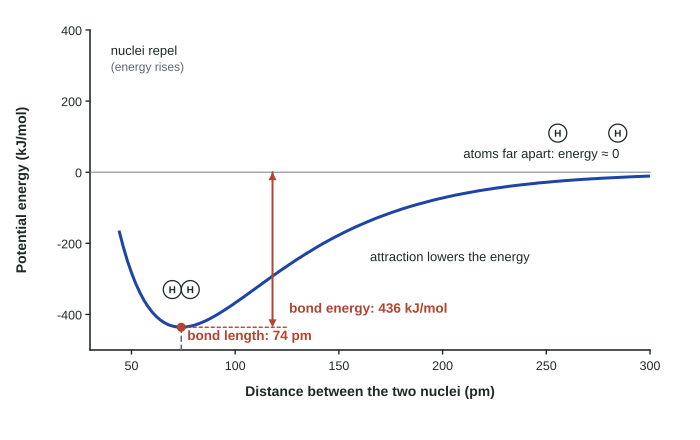
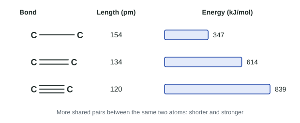

Topic 2.1 said a bond is an attraction. This page asks how far apart two bonded atoms sit, and how much energy it takes to pull them apart. Both answers come from one graph, the potential energy curve, which is one of the most often tested pictures in Unit 2.
Forces inside a particle
An intramolecular force is a force that acts between the atoms inside one particle: a covalent bond inside a molecule, the ionic bond between ions, or metallic bonding inside a metal. "Intra" means "within". Unit 3 deals with the much weaker attractions between separate particles; keep the two apart from the start.
Two atoms approaching
Picture two hydrogen atoms, far apart. They do not affect each other, and we call their potential energy zero. Now bring them closer:
- Attraction. Each nucleus starts to attract the other atom's electron. The atoms are pulled together and the potential energy falls below zero, just as a ball loses potential energy rolling downhill.
- Repulsion. Very close, the two positive nuclei, and the two atoms' electrons, push each other apart. Repulsion grows faster than attraction at short range, so the potential energy rises steeply.
Somewhere in between, attraction and repulsion balance and the potential energy is at its lowest. The atoms settle there. Plotting the potential energy against the distance between the nuclei gives the potential energy curve.

Reading the curve
Two numbers come straight from the minimum:
- The bond length is the distance between the nuclei at the minimum: 74 pm for H₂. (1 pm, a picometer, is 10⁻¹² m.)
- The bond energy is the depth of the minimum below zero: 436 kJ/mol for H₂. It is the energy needed to break one mole of these bonds, taking the atoms from the bottom of the well back up to zero, where they no longer interact.
The sign matters. When a bond forms, the atoms drop to lower potential energy and the difference is released. To break a bond you must add energy. Bond breaking always requires energy; bond forming always releases it.
Worked example. A curve for F₂ has its minimum at 142 pm and −159 kJ/mol. State the bond length and bond energy, and the energy needed to break the bonds in 0.500 mol of F₂.
Bond length: the x-coordinate of the minimum, 142 pm.
Bond energy: the depth below zero, 159 kJ/mol (a positive amount of energy you must add).
Energy for 0.500 mol: 0.500 mol × 159 kJ/mol = 79.5 kJ. The moles cancel; three significant figures, from 0.500 and 159.
What sets the length and the energy
Atom size. Larger atoms have their valence electrons in higher shells, farther from the nucleus, so the nuclei settle farther apart. Cl₂ (valence shell n = 3) has a bond length of 199 pm, far longer than H₂'s 74 pm. Longer bonds are usually weaker, because the shared electrons are farther from the nuclei that attract them.
Bond multiplicity. Two atoms can share one, two or three pairs of electrons. One shared pair is a single bond, two pairs a double bond and three pairs a triple bond. Between the same two atoms, more shared electrons mean more negative charge between the nuclei and a stronger pull on both, so the bond is shorter and stronger.

| Bond | Shared pairs | Length (pm) | Energy (kJ/mol) |
|---|---|---|---|
| C–C | 1 | 154 | 347 |
| C=C | 2 | 134 | 614 |
| C≡C | 3 | 120 | 839 |
On a graph, a stronger, shorter bond has a minimum that is deeper (more energy to break) and farther to the left (shorter length). Notice that a carbon-carbon double bond is not twice as strong as a single bond: for carbon, the second and third pairs add less than the first. This is not a general rule. The N–N single bond is unusually weak (160 kJ/mol), so N=N (418) and N≡N (945) are more than two and three times as strong.
Ions and Coulomb's law
For two ions the same ideas apply, and Coulomb's law (on the equations sheet) tells you how strong the attraction is: F ∝ q₁q₂/r², where q₁ and q₂ are the charges and r is the distance between the centers of the two ions. Larger charges and a shorter distance give a stronger attraction and a deeper energy well.
Worked example. Compare the attraction in Na⁺–Cl⁻ (centers 282 pm apart) and Ca²⁺–O²⁻ (240 pm apart).
Charges: 1 × 1 = 1 for Na⁺–Cl⁻; 2 × 2 = 4 for Ca²⁺–O²⁻.
Ratio = (4 / 240²) ÷ (1 / 282²) = 4 × (282/240)² = 4 × 1.381 = 5.52.
The Ca²⁺–O²⁻ attraction is about 5.52 times stronger: larger charges and a shorter distance. Note that r is the distance between the two ions' centers, not one ion's radius.
Common mistakes
- "Breaking a bond releases energy." Breaking always takes energy; it is forming bonds that releases it.
- Reading the wrong axis. Bond length is a distance (x-axis, pm); bond energy is a depth (y-axis, kJ/mol).
- Coulomb's law with one factor. Compare both the charges and the distance, for both species.
- Forgetting the square. The force falls with r², so halving the distance makes it four times stronger.